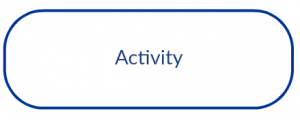
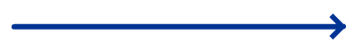
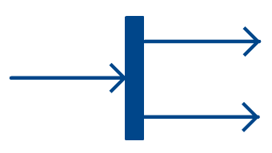

#### Ingeniería de Software # UML: Diagrama de Actividad Created by <i class="fab fa-telegram"></i> [edme88]("https://t.me/edme88") --- ### DIAGRAMA DE ACTIVIDAD Es un diagrama de **comportamiento**, muy similar a un diagrama de flujo. Ayuda a visualizar un determinado caso de uso a un nivel más detallado. Ilustra el flujo de actividades a través de un sistema. --- <!-- .slide: style="font-size: 0.70em" --> ### Símbolos <table> <thead> <tr> <th>Símbolo</th> <th>Nombre</th> <th>Uso</th> </tr> </thead> <tbody> <tr> <td></td> <td>Nodo de inicio</td> <td>Representa el punto de partida o el estado inicial de una actividad.</td> </tr> <tr> <td></td> <td>Actividad</td> <td>Se utiliza para representar las actividades del proceso</td> </tr> <tr> <td></td> <td>Control de flujo</td> <td>Representa el flujo de control de una acción a otra</td> </tr> <tr> <td></td> <td>Nodo Final</td> <td>Marca el final de todos los flujos de control</td> </tr> <tr> <td><img src="images/unidad5/actividad/Decision-node-and-merge-node.png"></td> <td>Nodo de decisión</td> <td>Representa un punto de ramificación condicional con una entrada y múltiples salidas.</td> </tr> <tr> <td></td> <td>tenedor</td> <td>Representa un flujo que puede ramificarse en dos o más flujos paralelos</td> </tr> <tr> <td><img src="images/unidad5/actividad/Note-or-comment.png"></td> <td>Nota / Comentario </td> <td>Permite añadir comentarios pertinentes a los elementos</td> </tr> </tbody> </table> --- Diagrama de actividades para la función Acceder a la vigilancia con cámaras por internet, mostrar vistas de cámaras  ---  --- ### Diagrama de actividad para el acceso  --- ### Diagramas de canal (swimlane) Es una variación del diagrama de actividad. Permite representar el flujo de actividades descritas por el caso de uso; al mismo tiempo, indica qué **actor** (si hubiera muchos involucrados en un caso específico de uso) o clase de análisis es responsable de la acción descrita por un rectángulo de actividad. Las **responsabilidades** se representan con segmentos paralelos que dividen el diagrama en forma vertical como los canales. ---  --- Los casos de uso, junto con los diagramas de actividades y de canal, están orientados al procedimiento. Representan la manera en la que los distintos actores invocan funciones específicas para satisfacer los requerimientos del sistema. --- ### Pasos para dibujar un diagrama de flujo 1. Averiguar los pasos de acción del caso de uso 2. Identificar a los actores (responsables) que están involucrados 3. Encontrar un flujo entre las actividades (Averiguar en qué orden se procesan las acciones, si se pueden paralelizar) 4. Añade los canales según los responsables --- ### Diagrama de actividades del sistema de gestión de documentos  --- ### Diagrama de actividad para el sistema de compras en línea  --- ### Diagrama de actividad para ATM  --- ### Diagrama de actividades del sistema de gestión de la universidad  --- ### Ejercicio 1: Restaurante Modelar, mediante un diagrama de actividad con swimlanes, el flujo completo de una reserva: desde que el cliente intenta reservar/cancelar, hasta el cierre de reservas y la gestión de asistencia con tolerancia y penalización. --- ## ¿Dudas, Preguntas, Comentarios?  <!--https://es.venngage.com/blog/diagrama-de-actividades/-->